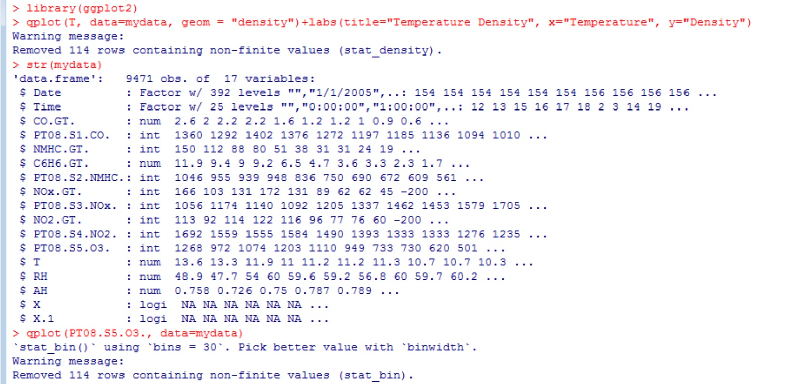
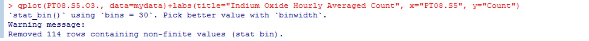
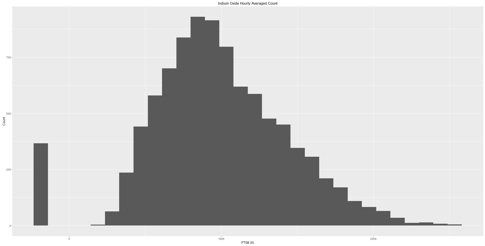

Tutorial 3
Histogram
We can also make a histogram using qplot() by only specifying a single variable.
Step 1) Load and attach the package in R: library(ggplot2)
Step 2) Load the data with the read.table(file, header=TRUE, sep=",") function. The first argument is the address of the file. The second argument header is a logical value indicating whether the file contains the names of the variables as its first line. The third argument sep is the field sperator character.
Step 3) Let's take a look at the internal structure of the data by using the str() function. Notice how the all the parenthesis inside column names from the data have became periods.
Example: PT08.S5(O3) have became PT08.S5.O3
Step 4) Now we can create the plot using qplot. Inside qplot(x, data=z), the first attribute is the x coordinate and the "data=" is the data frame.

Let's improve the graph by adding labels.
Step 4) We can edit the title, x axis label and y axis label by adding labs(title="", x="", y="").
 